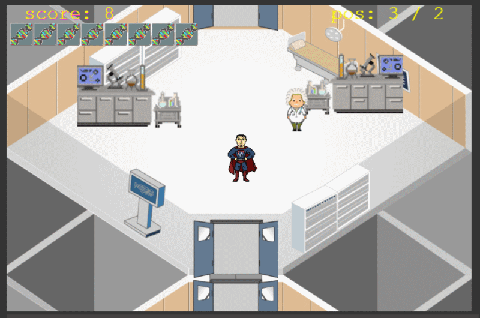

Genomics Research Quiz Game
INTRODUCTION TO THE GAME (2022)
Célébrer la Semaine de la sécurité de l’information, c’est souligner la manière dont nous travaillons ensemble pour plus de sécurité.
Venez mettre au défi vos connaissances sur les différents principes de la sécurité de l’information par l’un des chemins disponibles dans le labyrinthe!
Un code bleu se déroule et le médecin doit ouvrir des portes des salles pour atteindre le patient et le sauver.
Celebrating information security week is underlining how we work safer together
Come challenge your knowledge about different information security principles through any of the paths available in the maze!
A code blue has been called and the physician needs to unlock rooms to reach the patient and save him

Le joueur peut choisir n'importe quelle station du laboratoire, mais il ne peut donner la bonne réponse qu'une seule fois.
Si la réponse correcte est acceptée, la question est considérée comme résolue et devient inactive pour cet emplacement.
Si la réponse est incorrecte, le joueur a donné une autre chance (cette question est toujours active).
Pour passer de l'un à l'autre, il utilisera les flèches/touches de navigation (également : touches WASD).
Le joueur aura la possibilité d'aller à gauche ou à droite (ou de haut en bas) après chaque poste de travail jusqu'à ce qu'il atteigne une destination finale.
Il faut répondre correctement à la question pour obtenir le prochain code du génome.
Si le chercheur répond correctement, il recevra un composant du génome.
Le joueur doit en obtenir 8 pour terminer l'édition du génome et créer avec succès le traitement
The player,in the role of Researcher, will walk to different sections of a Lab (total sections: 8).
Each of 8 workstations will present the chance to answer a Quiz.
The player can choose any station at the Lab, but he can give the correct answer only once.
If correct answer accepted the question considered as resolved and became inactive for that location.
If the answer is incorrect, the player has given another chance (taht question is still active).
To move from one to the other he will use arrows/navigation keys (also: WASD-keys).
Player will be given the option to go left or right (or up and down) after each workstation until he reaches a final destination.
The Question must be answered correctly to get the next genome code.
If Researcher answers correctly, he will be given component of genome.
Player must obtain 8 of these to complete the editing of the genome and successfully create the treatment.